InteligênciaLink incompleto
Este endereço chegou sem o código do seu relatório. Fale com a nossa equipe e resolvemos rápido.
Pagamento recebido.
Preparando seu relatório
Cartão e Pix liberam em instantes · Boleto libera na compensação, em até 1 dia útil
Pode deixar esta página aberta.
Seu relatório está pronto.
Você também recebe o link por e-mail.
Tudo certo com seu pagamento.
Assim que o relatório ficar pronto, o link chega no seu e-mail.